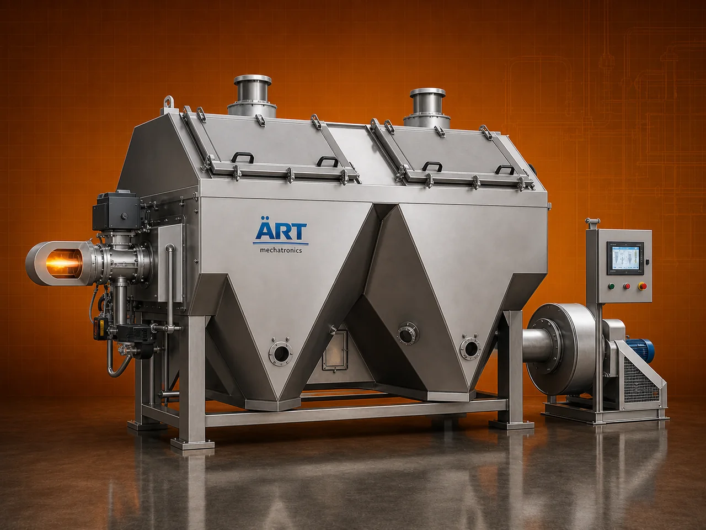

Batch Type Dryer Machine (Industrial Hot Air Dryer for Granular Food & Agro Products)
A Batch Type Dryer Machine, also known as an Industrial Hot Air Dryer or Food Drying & Roasting System, is a specially engineered solution for uniform drying and roasting of granular materials such as grains, seeds, nuts, pulses, and food products.

About the Batch Type - Hot Air Dryer
This machine is widely used in industries like food processing, agro processing, pan masala, spices, and nut processing, where materials need to be dried to precise moisture levels for improved shelf life, texture, and quality.
Designed with a high-efficiency hot air circulation system, this dryer ensures consistent moisture removal, uniform heating, and controlled roasting, making it ideal for a wide range of applications.
ART Mechatronics offers a robust and energy-efficient batch dryer machine, built for reliable performance, uniform output, and industrial-scale processing.
One machine, many names
Buyers search for this equipment under many terms — we manufacture all of them:
Working Principle of Batch Type Dryer
Ensures proper distribution for uniform drying
W-Shaped Drying Chamber
- Better material distribution
- Enhanced airflow penetration
Multi-Layer Hot Air Shell System
- Efficient heat transfer
- Reduced fuel consumption
Batch Process Control
- Full control over drying cycle
- Consistent product quality
High-Efficiency Burner + Blower
- Rapid heating
- Uniform air flow
Compared to conventional dryers: ✔ Faster drying ✔ Uniform moisture removal ✔ Energy-efficient performance
Types / Application Configurations
Industries Using Batch Type Dryer
🌾 Agro Processing Industry
- Grains, pulses, seeds
🍃 Food Processing Industry
- Nuts, snacks, food ingredients
🌶️ Spice Industry
- Pre-processing drying
🌿 Pan Masala Industry
- Raw material drying
- Supari drying
- Supari roasting
- Betelnut drying
🏭 Industrial Food Manufacturing
- Bulk drying operations
Features & Advantages
✔ Uniform drying and roasting ✔ Suitable for multiple granular products ✔ Controlled moisture reduction ✔ Energy-efficient hot air system ✔ Batch-wise process control ✔ High durability and robust design ✔ Consistent product quality
Technical Highlights
- Capacity: Custom batch size
- Drying Type: Hot air batch system
- Fuel Type: Diesel / Gas
- Temperature Control: Adjustable
- Construction: Mild Steel with insulation
- Air System: High-efficiency blower
- Moisture Reduction: Precise and uniform
Turnkey Drying Solutions
ART Mechatronics offers:
- Complete drying system design
- Burner and airflow optimization
- Installation & commissioning
- Integration with processing lines
- After-sales service & AMC
Why Choose Art Mechatronics
- Expertise in industrial drying systems
- Proven design for multiple products
- Customized solutions for various industries
- High efficiency and durability
- Strong industry experience
Applications
- Food Processing Units
- Agro Processing Plants
- Nut Processing Units
- Spice Processing Plants
- Pan Masala Manufacturing Units
Industries that use the Batch Type - Hot Air Dryer
Related Heating & Drying machines
Get pricing & specs for the Batch Type - Hot Air Dryer
Share the product, target capacity, current process and plant location. These details help our engineers discuss the right machine or line configuration.
One partner, from design to start-up
ART Mechatronics designs, manufactures, installs and commissions your Batch Type - Hot Air Dryer solution with regional presence in India, UAE and Thailand.